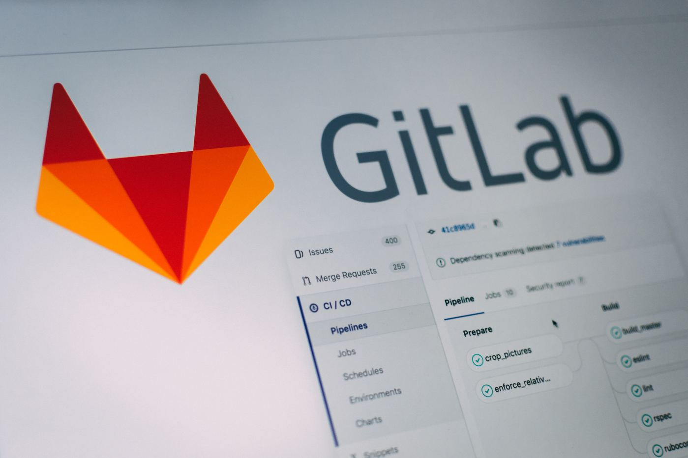

June 11, 2023
5 Essential Elements for Your CI/CD Pipeline

In recent years, DevOps and continuous integration has gained widespread popularity as a way to increase agility and speed up bringing things into production. However, delivering fast is not meant to sacrifice quality or security. In fact, process automation and including things like DevSecOps and automated testing in your CI/CD pipeline is IMHO the foundation to velocity in software development.
Here are 5 things, that are a must-have in your CI/CD Pipeline:
1. Automated Tests
You've probably heard this 1 million times, but this doesn't make it less important. The number 1 thing that you should put into your CI/CD pipeline are unit / integration / end2end tests!
Automated tests enable developers to catch and fix issues before they even reach production, which will be saving time and resources in the long run. Also, it replaces slow and error-prone manual tests that have to be repeated over and over and therefore are not scalable. If you aren't already, stop procastinating and write automated tests now!
2. Code quality
As soon as you are not the only one working on a project, you should set some standards on how to write code to make it maintainable (and stop discussions like tabs vs spaces😂). Therefore, you should include some Quality assurance, for example SonarCloud / Sonarqube or similiar into your CI/CD pipeline. These tools help you to scan for coding mistakes, formatting issues, security issues (like plaintext passwords in your codes) and other high-level errors, that should be prevented before your code reaches the main branch. It also gives you some unprejudiced overview about the status of your codebase.
3. Ongoing Security scans
Now that we have some decent level of code quality, we should ensure that we don't publish or keep maintaining unsecure code infrastructure. Still using outdated nodejs-versions or docker images? That's a no-go for you and your product. Implement tools like Snyk or Trivy to scan your docker images for potential security issues. Analyze your code with Tools like OWASP Source Code Analysis tools. Automate the update of dependencies by letting for example Dependabot create PRs to update your third party dependencies. Security doesn't have to be cumbersome, if it's a fundamental and permanent part of your deployment pipeline.
4. License-Scanning
One aspect that can cost your project or your company a fortune is the possibility, to use third party dependencies that are not under correct licenses. The so-called "copyleft"-effect could seriously harm you and your intellectual property rights. Therefore, you should scan your codebase with a license-checker that has a defined list of licenses allowed by you or your company. This way, no wrong licenses can "slip through" into production.
5. Deployment and Rollback-plans
The final goal of CI/CD pipelines is usually to deploy to production. However, there are still a few steps, that should be considered in between:
- Feature branch environments
If you have already automated the process to deploy, there's no real reason not to create feature branch environments for frontend-applications. Feature branch environments are short-lived deployments, which have the only purpose that people can test this one feature or bugfix isolated from everything else. This is super useful, because you don't integrate branches that are not fulfilling business requirements or have bugs only detectable by manual / explorative testing. Trying to roll back certain parts of releases will in my experience nearly always result in an catastrophic outcome.
- Canary Deployments
When you deploy server-side code or code, where you cannot see if the update will cause any harm until it's in production, think about how to detect it and still bring it into production with canary deployments. How does this work?
- Think about what could go wrong
- Make it measurable, by creating metrics (e.g. response time / request, error messages in a logfile / minute, authentication failures / second,...)
- Implement these metrics
Whenever you have them ready, you can provide them to tools like Argo Rollouts, so that it can make the canary deployment. This works by slowly rolling out the changes to more and more people. For example:
- Give 10% of the users the new code, 90% the old one
- Monitor if the Metrics are staying inside of the defined thresholds
- Give 20% of the users the new code, 80% the old one
- ...repeat, until it's fully rolled out
Believe me, canary deployments will protect you from some heart attacks and support your CI/CD Pipeline a lot!
- Automate your Rollback Plans
How long does it take, to bring the previous version back into production? Is the Database Migration revertable? What happens, if someone accidentally deletes your infrastructure?
Think of these cases and automate the testing and validation of it. For example:
- Infrastructure as Code helps for accidental deletion of your infrastructure
- Running "terragrunt plan" before applying changes will prevent you from applying invalid configuration
- Blue / Green deployments make it possible, to revert your frontend release in 30 Seconds
- Running Database migrations up / down / up before testing in dev helps you to make sure, that they are revertable properly
- ...
You probably have even more ideas. Automation in CI/CD Pipelines is the key, but nobody can do everything from the beginning. Start small, try to implement at least one step from each of the above areas and then increment from there.